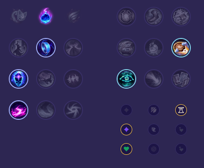

Starter: Pierścień Dorana 2x Mikstura Zdrowia Core Bulid: Towarzysz Luden Buty Maga Kryształowy Kostur Rylai Full Bulid: Płomień Cienia Zabójczy Kapelusz Rabadona Klepsydra Zhonyi

Słaby przeciwko: - Akali - Malzahar - Naafiri - Fizz - Sylas - Yasuo Dobry przeciwko: - Veigar - Mel - Lux - Ahri - Anivia - Yone